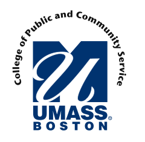

U Mass Boston/College of Public & Community Service

Website:
http://www.cpcs.umb.edu/ Location:
Boston, MA
The College of Public and Community Service is one of five colleges that comprise the University of Massachusetts Boston campus. As such, CPCS seeks to extend the tradition of the land grant university in a number of ways:
Educating students to foster the public good and aid the transformation to a more equitable society
Providing research, advocacy, technical assistance, and service to the surrounding community
Forging partnerships with public agencies and community organizations that enhance the quality of life for low income and other inadequately served populations
In these ways, the college works toward overcoming the attitudes, beliefs, and structures in our society which prevent access to the resources that exist and discourage full participation in economic, civic, cultural and political life. As an alternative educational institution, CPCS endeavors to function as an inclusive, democratic, and participatory learning community which promotes diversity, equality, and social justice.
CPCS actively cultivates a diverse and mature student body and offers an empowering and effective education which equips students to advocate for themselves and to improve the health and well-being of their chosen communities. The college recognizes that, particularly in a multicultural society, such an educational enterprise is inextricably bound to the complementary goals of meaningful access and adequate support for underserved populations. The successful CPCS graduate is a competent, confident, self-directed, life long learner who can demonstrate:
Language and technical skills necessary for purposeful inquiry and communication
Professional competence to function effectively in a broad range of workplace and community-based roles and activities
Critical consciousness needed to clarify and challenge prevailing values, ideologies, and practices
Essential knowledge required for participating fully in society
The CPCS curriculum is designed with such students in mind. The core of this inventive educational system is an outcome-oriented curriculum in which prior learning is validated and collaborative projects are encouraged. At CPCS, the student is considered a resource in the educational process, and the acquisition of knowledge and skills intersects with experiential learning and field-based education. As a forward-looking educational institution, CPCS continues to explore innovative delivery systems and technologies and seeks to articulate its educational philosophy and pedagogy with other academic institutions, community organizations, and public agencies.
Supported Projects
Assistant Editor and Curriculum Coordinator
Danielle Martin
8/2005 — 8/2007
A VISTA will help coordinate the variety of content that supports the CTC VISTA Project and that the Project produces for the community media and technology fields. This position provides an excellent environment in which to develop professional editorial skills in various media. This VISTA will serve as Assistant Editor of the Community Technology Review
As specified in this year’s project basics (www.cpcs.umb.edu/vista/projectbasics.htm), all organizations participating in the VISTA Project will be required to do some work in one of four areas (community networking, community organizing, technology assistance to nonprofits, and digital media for youth). Nationally known experts will be coordinating each of these areas. The Curriculum Coordinator will work with these experts to develop curricular material to be used for people with interest these areas and for the College’s Community Media and Technology program.
In her capacity as Assistant Editor of “The Community Technology Review” (www.comtechreview.org), Danielle ably undertook a wide range of responsibilities including taking over the reins from the previous Associated Editor and completing all organizing and author communication already in the works, coordinating sections and writing a substantial number of articles for the fall issue. She oversaw the development and production of the online version, dealt with university printing services in arranging for hard copy printings, and did author/contributor follow-up. Following this, she was helpfully involved in working with the Advisory Committee in undertaking future planning, and when the decision was made for the publication to go on hiatus and be replaced in the interim with the Project newsletter/report, she accepted oversight responsibility and published the first issue (see www.cpcs.umb.edu/vista/newsletters) in its entirety. She has followed this up with taking primary responsbility for planning future issues for the remainder of the project year, including coordination with the Priority Area Coordinator materials, as that dovetails and integrates with her work with them in developing curricular material for the project that can be integrated with the College’s Community Media and Technology Program (www.cpcs.umb.edu/cmt). In addition to these things, she has proved to be a key and invaluable member of the project leadership team at office headquarters.
Danielle serves as liason between the Community Media and Technology Program curriculum building efforts and the VISTA project’s content focused learning groups. She has been extremely effective in working with faculty in curriculum design, making real connections between the field work of the VISTA’s and the CMT curriculum. She has also worked to assist me in the Tactical Media project, a project-based learning initiative of the program, in coordinating planning and research, presentations and communications flow for the project. She has also taken the leadership in creating and presenting a number of new media workshops, digital storytelling, for example. Along with her VISTA partner, she coordinated a digital media mini conference for students, faculty and staff. Danielle has undertaken extensive curriculum research for a study on community media our program is doing in conjunction with the Benton Foundation, as well research for the development of future courses in the College of Public and Community service. Danielle has performed at a very high level of thoughtfulness and strategic insight. Danielle has made an enormous contribution to the CMT program’s development.
Danielle has quickly become an important part of the Project headquarters team. She has shown admirable persistence in her efforts to draw some useful ‘curriculum’ from busy VISTAs and under-utilized ‘priority area coordinators.’ I actually think that she has accomplished more in this area than she gives herself credit for– mostly through her exchanges with VISTAs in the field but also through her (and Shannon’s) efforts to get VISTAs involved in workshops and events related to the CMT program. She has in some sense become an unofficial VISTA leader through here extensive contact with VISTAs across the country. She has also done a good deal of evangelizing for the Project– a number of new organizations will be applying as a result of these efforts. She’s a gifted/natural-born communicator and that’s just so helpful in so many ways.
VISTA Leader
Saul Baizman
8/2004 — 8/2006
Saul was the VISTA Leader for the 2004 - 2005 Program year and worked to manage, motivated, and connect all the Digital Arts Service Corps members out in the field. Saul also worked to redesign the DASC website and implement a better system for VISTAs to record and share their experiences online.
VISTAs have not had an easy time keeping in touch with each other, both during and after service. In some cases certain personal information wasn’t even kept on file, such as a home telephone number. I created a global addressbook last year and incorporated it into the redesigned VISTA website this year. Alumni and current VISTAs now have a simple facility on the Project website to share their information as well as access other VISTAs’ information. In enhancing VISTA alumni resources and communications the VISTA Leaders wrote a form letter to all past alumni announcing the creation of a new CTC VISTA alumni connections mailing list (January), which also served to connect alumni to the great CTC VISTA directory networking resource. We plan to use this addressbook to periodically send a newsletter to alumni and hold reunions.
Assistant Director Paul Hansen and I worked collaboratively to re-launch the VISTA website (http://www.cpcs.umb.edu/vista/), creating a mock-up on a development server before going live with the re-design. In addition to migrating the directory pages off the development server, I replaced the static roster listings (current VISTAs, alumni, all VISTAs, and organizations) with dynamic database- backed pages, laying the groundwork for a recruiting system in which potential supervisors can add and edit VISTA job descriptions directly on the website. (The rosters do not at present list who is a second- or third-year VISTA, and it does not indicate any special titles for people, like VISTA Leader, for example).
Developed enhanced VISTA resources. One of the biggest challenges any group of short-term workers faces is the loss of knowledge when the staff turns over. In an effort to combat the lack of knowledge retention between VISTA “classes,” Dan
Schackman and I erected a resource wiki on the Project website. A wiki is “a website that allows users to add content, as on an Internet forum, but also allows anyone to edit the content” (WikiPedia.org). The wiki technology is widely deployed across the Internet and was chosen for its ability to cater to both novice and advanced Internet users. Dan and I created a modest framework though which VISTAs and non-VISTAs alike can contribute to and maintain a database of resources exclusively targeted to CTC VISTAs. Dan and I fleshed it out with resources provided by VISTAs David Johnson and Michelle Rogers. I feel the wiki will serve as an effective tool enabling VISTAS to have greater participation
The Community Technology Review website (www.comtechreview.org) was beefed up and migrated from an obsolete web server to a server which hosts all other CPCS website properties (CPCS, VISTA, CBC, etc.). Of note are the new comment approval system and the PayPal order page. The comment page will ease the approval process for user-submitted comments, and the order page will streamline CTR hardcopy purchases which can now be handled with a credit card. I also trained Dan Schackman to use the administration interface and made some minor code changes for the Winter 2005 issue.
Finally, I became savvy with Final Cut Pro and edited a couple of small VISTA project videos for distribution on the web (http://www.cpcs.umb.edu/vista/video/). I massaged the swearing in footage for the 2004-05 crop of VISTAs originally shot on September 1 by former VISTA Leader James Fishwick, featuring US Representative Barney Frank and UMass/Boston Chancellor Keith Motley. A couple more projects have been added to the archives, including a Liz Cavano’s half-hour “What’s a VISTA” (2001) and Scott Hillier’s “CTC VISTAs: A Day in the Life” (2003).
The past few months haven’t been spent exclusively glued to a keyboard and monitor. I spoke at Faneuil Hall in October on AmeriCorps Opening Day, an ambassador of the CTC VISTA Project. A number of situations arose with a few VISTAs, some of whom I tried to help with varying degrees of success. For my part I served as a liaison with a VISTA in Minnesota, who ended up leaving the program after transferring from her first assignment and failing to make her second assignment work; I supported two VISTAs in Massachusetts, one in California, and one in North Carolina who had some conflicts with their supervisors and another experiencing some serious interpersonal conflicts with one of her co-workers. These situations have been very time and energy intensive, requiring frequent and detailed communication with VISTA support staff and the involved parties.
On a related front of Project responsibility, I assumed coordinating responsibilities for the monthly meetings among the Boston VISTAs, ensuring an agenda, chairperson, and minute-taker for every meeting as well as editing and posting the minutes
During the 05-06 project year, Saul’s supervisor said the following:
Saul has continued to lend his considerable technical skills to a number of projects– some to the benefit of the college others to the benefit of the Project. The addition of the reporting system to the Project’s ‘online application system’ has been an enormous help and was pulled-off pretty much without a hitch. Reports were submitted by participating organizations largely on-time! This was unheard of in the past and represents a huge leap forward in efficency. He continues to work on the application system. Currently he is revising it so that organizations can have and access more than one application– for multi-year projects. This revision is proceeding slowly however. In the role of VISTA Leader (and as the Leader of the other Leaders) Saul has performed well. Communication between the Leaders could be better (more frequent perhaps) but the improvement over previous years has been considerable largely due to his coordinating efforts which began well before the August 2005 PSO. Saul also plays a vital role as the person whom I bounce my ideas off of. As I often have bad ideas, the value of this cannot be underestimated.
Taylor Center Media Program Technical Manager
Shannon McCue
8/2005 — 8/2006
As technical manager of the Taylor Center Media program Shannon will manage the equipment flow, checkout and maintenance process as well as provide technical and production assistance to both faculty and students, conducting one on one and workshop instruction in the use of video, computer and web production and editing.
Shannon McCue has served successfully as the technical manager of the Taylor Center Media program. She continues to manage the equipment flow, checkout and maintenance process. She provides technical and production assistance to both faculty and students, conducting one on one and workshop instruction in the use of video, computer and web production and editing. Along with her VISTA partner, she coordinated a digital media mini conference for students, faculty and staff. Shannon also has worked with her VISTA partner, Danielle Martin, to set up and schedule a number of production workshop and learning events in the course of the year [video blogging, video lighting and sound to mention just a few] in addition to working effective in the on-going maintenance of communication flow, production planning and coordination of the Tactical Media project, a project-based learning initiative of the program. Shannon is extremely trustworthy and thoughtful in carrying out her duties. Shannon has made an enormous contribution to the CMT program’s development.
VISTA Leader
Dan Schackman
6/2004 — 8/2005
Dan Schackman joined the CTC VISTA Project management team as one of two VISTA Leaders, after serving for two years as a CTC VISTA at CTCNet. In addition to VISTA Leader duties, Dan has served as Assistant Editor of the Community Technology Review journal and as Associate Producer of the Commonwealth Broadband Collaborative.
As VISTA Leader, Dan
• Helped coordinate CTC VISTA PSO held in Boston August 30-Sept. 1;
• Developed a plan for VISTA Leaders and the Resource Specialist to facilitate monthly regional group conference calls and individual check-in calls with CTC VISTAs serving outside of the Boston area, replicating the MA CTC VISTA monthly in-person meeting, and implemented for his assigned groups in the Midwest and South;
• Redeveloped quarterly CTC VISTA News, the Project’s newsletter for the VISTAs, edited and published in the fall and winter;
• Participated in monthly MA CTC VISTA meetings;
• Provided feedback on various Project office communications and support systems: CTC VISTA Project web site relaunch, CTC VISTA Project blog and individual CTC VISTA Project blogs, Fall “care package” to VISTAs, various memos and resource sharing via email lists.
Notable challenges include: Making sure as many VISTAs, if not all, participate in the check-in calls and blogs, and dealing with VISTAs having particular difficulties at their site and/or in their lives, requiring a lot of time, patience, and tact.
As Assistant Editor, Community Technology Review,
• Developed new features for the journal, including expanded Resources section and Perspective endpiece column with guest writers.
• Did outreach for writers and resource contributors for Winter 2004-05 issue.
• Coordinated and helped edit Winter issue, sections and individual articles.
• Produced web site version of the Winter issue.
• Developed editorial plan for Spring 2005 issue.
• Developing ideas for redesigning web site, and developing advertising opportunities.
As Associate Producer, Commonwealth Broadband Collaborative
• Participated in planning meetings and discussions for future of CBC.
• Developed relationship with The September Project, a community remembrance and civil liberties awareness project focused on September 11 event.
IT Support and Consulting
James Fishwick
8/2002 — 8/2004
James Fishwick’s VISTA assignment began with a focus on development support for the Greater Boston Broadband Network, support for the growth of the College’s technology use by faculty and staff and in programs related to the Community Media and Technology program, and CTC VISTA project web site support. Over the course of his last six months, James continued to do very impressive work in all three areas and concluded his term of service by becoming the project’s VISTA Leader for a second year of service and attending VISTA Leader training at the end of August.
James took on major responsibility for CBC coordination, project web site development, and the monthly pilot cable and web cast “First Tuesday” program, undertaking the latter while serving as the Assistant Producer.Overall project coordination involved assisting with monthly meeting arrangements and follow through with subcommittee needs and support. Web site development included not only design and technical maintenance but content development as well. As Assistant Producer for “First Tuesday,” James undertook a wide range of tasks insuring smooth program production, including serving as live-time chat coordinator and on-camera contributor, set design, plant, and web cast coordination, and post-production assistance.
With regard to the College, James continued to provide a good range of support to individual faculty and programs and helped give visible, tangible testimony of the value of the Community Media and Technology program. In addition to special help to five faculty/programs, James assisted the CPCS IT Task Force, a committee dedicated to a thorough review of the current IT landscape at UMass and its effect on the college. The task force makes recommendations to the college on how to move on various IT issues, especially the establishment and subsequent development of the Clark Taylor Center. James has served as secretary to the committee and has helped to facilitate discussions on needs for the Center with CPCS faculty.
Finally, as the web master for the CTC VISTA Project itself (www.cpcs.umb.edu/vista), James initiated a number of design and content contributions that have contributed to the project’s aesthetic and programmatic presentation for VISTAs, supervisors, and the general public. His work with the VISTAs in encouraging and helping them develop their own web pages and resources, along with his moderation of the metroBoston and national CTC VISTA member electronic discussion lists and general communication have given him a major leadership status among his fellow VISTAs and in the overall project.
Community Technology Review Assistant Editor
Caroline Bennett
8/2003 — 8/2004
Caroline Bennett served as Assistant Editor for the Community Technology Review, helping coordinate the summer ‘04 CTCNet conference issue (see attached and online at http://www.comtechreview.org); edited the CTC VISTA Newsletter (http://www.cpcs.umb.edu/vista/newsletter), producing issues in March, April, and August; and assisted with other VISTA Project and Community Media and Technology Program support work.
Caroline developed the Community Technology Review, the nationally-recognized and distributed hard copy and online journal (www.comtechreview.org), built its capacity for sustainability, including business plan development and issue management.
CTC VISTA Project Program Support
Melissa Daigle
8/2002 — 8/2003
Melissa Daigle’s VISTA assignment began with a focus on support for producing and developing the Community Technology Review, with secondary goals of overseeing initial contact and placement assistance to prospective VISTA applicants, and providing other CTC VISTA Project program support as may follow from these two other objectives and otherwise as needed. Over the course of her first last months, Melissa did very impressive work in all these arenas.
Melissa’s work in serving as Assistant Editor for the Community Technology Review online journal involved overseeing most communication with the authors; manuscript editing and development; online line production and design (a task she’s undertaken concurrent with learning to use online tools such as Dreamweaver); outreach; subscription management; and general systems and procedures development to insure a more smooth-running operation. She has laid some useful preliminary foundations for advertising and fundraising
Melissa’s work in overseeing the project’s outreach and information pages on the Corporation for National Service’s information web site and dealing with prospective program VISTAs has been organized and efficient. Through the late spring and summer, this extreme demands of this task involving communication not only with all VISTA applicants but with project supervisors can be appreciated by the fact that the CTC VISTA Project is the most popular in the entire CNS system. A combination of work in both these arenas lead to a natural taking on of project-wide development work involving support for Project VISTAs in numerous arenas, the most visible of which were her work in producing a VISTA-focused project newsletter (www.cpcs.umb.edu/vista/Newsletter) and overseeing/coordinating the project’s joint VISTA-Supervisor Advisory Committee. Along with her contributions to the monthly Boston-area VISTA meetings, serving on the “First Tuesday” television production team, filling the gaps and undertaking other initiatives for project support, Melissa’s leadership is generally recognized by both her peers and the project administration.
CTC Assistance
Matt Crichton
9/2000 — 9/2001
Goal 1: Participate in, enhance and develop programs in host organizations that deepen and broaden the participating community’s use of technology in pre-school, after-school, adult education, literacy and other programs. These activities might include: developing materials or classes in languages other than English, staffing public access hours, developing and supporting volunteer resources, creating new initiatives for specific groups, such as seniors, very young children, working families, ore creating new initiatives for specific groups, such as seniors, very young children, working families, or creating Local Computer Resource Guides for particular neighborhoods.
Goal 2: Create, integrate and support tools and vehicles that strengthen the local network of CT providers such as shared web space, newsletter, joint trainings, meetings, and mini-conferences that facilitate organizational sharing of information, skills and resources with one another.
Goal 3: Create capacity in communities for their own members to become leaders. Develop training and internship opportunities for community members, target potential youth and adult leaders in the community, develop ways to support the growth of these leaders by including them in region-wide programs, introducing them to the array of programs in their own communities.
Outreach Coordinator
Erin Taylor
9/2006 —
The VISTA will work with the Project’s support staff and VISTA Leaders to provide coordination and support to other VISTAs in the field on professional, personal, and some administrative matters relating to service.
- Assist VISTA leaders and staff in coordinating training and conference attendance/participation
- Work with VISTA leaders on the development and coordination of collaborative projects developed by VISTAs throughout the year
- Coordinate the avenues of communications among VISTAs (blogs, newsletter, website)
- Assist with organizational outreach efforts
- Coordinate outreach to educational institutions and online communities that may be good sources of VISTA recruits
Erin Taylor has proved herself to be both hard working and innovative during her VISTA service and has greatly improved the ability of the CTC VISTA Project to accomplish its mission and programs.
As Project Development Associate, Erin was instrumental in improving our outreach and communication. Erin developed a comprehensive plan for outreach to colleges and other media technology programs, significantly enlarging our pool of qualified VISTA applicants. Additionally, Erin’s research of organizational and institutional partners led us to having one of the most successful VISTA placement rounds ever, with more than 100 organizations submitting applications. On her work on The Digest, our organization’s newsletter and review, Erin worked closely with staff and VISTAs to produce four unique and high-quality issues.
In addition to outreach work, Erin greatly improved our fundraising capacity. Erin researched more than 40 funding institutions, documenting her processes and providing a strong foundation for future development. She leaves many templates for proposals and grant language, and submitted many letters of introduction and one complete proposal.
Lastly, Erin has proved invaluable in her collaborations with other local VISTAs and VISTA Leaders. In addition to helping to bring about two successful Pre-Service Orientations and our monthly area meetings, Erin has greatly helped in encouraging discussion and creating collaborations between members and organizations.
Related Content
None created yet!